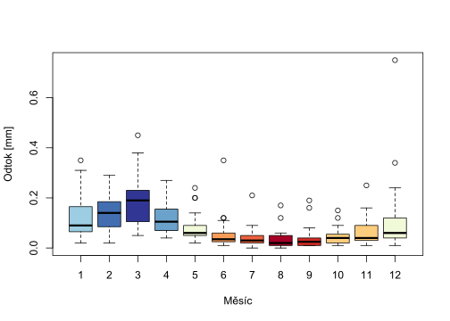

Kód
x <- rnorm(n = 10, mean = 1.25, sd = 5.36)
mean(x)[1] 1.523503Kód
sum(x)[1] 15.23503Kód
median(x)[1] 1.176428Kód
IQR(x)[1] 6.719705Kód
fivenum(x)[1] -5.909579 -1.663103 1.176428 5.619703 9.098266Vyjadřuje poměr mezi dlouhodobým odtokem a srážkou na povodí
\[ \varphi\:[\text{mm}] = \dfrac{Q\:[\text{mm}]}{P\:[\text{mm}]} \]
Je definována s pomocí rozpadové konstanty \(k\) a \(n\) předchozích dní
Nejvyšší hodnoty průtoku, kterých je dosaženo nebo překročeno průměrně 1\(\times\) za \(N\) let.
Nejnižší hodnota průtoku, která je dosažena nabo překročena po dobu \(m\) dní v roce.
x <- rnorm(n = 10, mean = 1.25, sd = 5.36)
mean(x)[1] 1.523503sum(x)[1] 15.23503median(x)[1] 1.176428IQR(x)[1] 6.719705fivenum(x)[1] -5.909579 -1.663103 1.176428 5.619703 9.098266curve(sin(x))